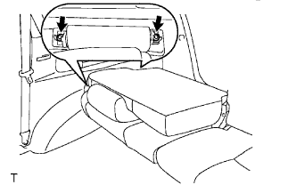
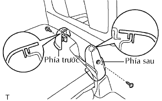

CỤM GHẾ SAU NO.2 > LẮP |
| 1. LẮP MÓC KHOÁ GHẾ SAU |
Lắp 2 móc khoá bằng 4 bulông.
Lắp thảm trải sàn.
| 2. LẮP CỤM GHẾ SAU NO.2 |
Nghiêng lưng ghế hoàn toàn về phía trước.
Hãy để ghế vào móc khoá.
|  |
Lắp bu lông ởø phía sau của ghế.
Lắp bu lông ở phía trước của ghế.
Khoá hoàn toàn ghế vào móc khoá.
| 3. LẮP NẮP CHE GIÁ BẮT PHÍA TRƯỚC GHẾ SAU PHẢI |
|  |
Gắn khóa cài để lắp nắp giá bắt.
Lắp vít.
| 4. LẮP NẮP CHE GIÁ BẮT PHÍA SAU GHẾ SAU PHẢI |
Trả lưng ghế về vị trí vuông góc.